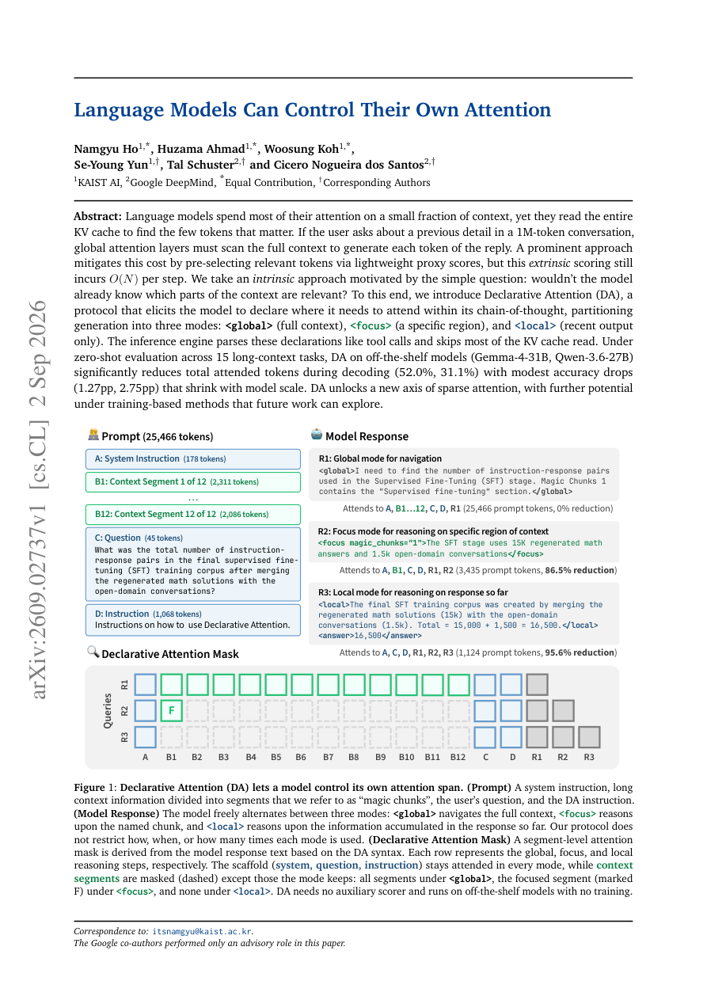

#1
★ 8/10
Language Models Can Control Their Own Attention
Language Models Can Control Their Own Attention

图 Figure · Page 1 of paper
🎯 （AI 中文深度分析暂不可用：Anthropic API 额度不足。英文栏为论文原文摘要，下方链接均可正常访问。）
Language models spend most of their attention on a small fraction of context, yet they read the entire KV cache to find the few tokens that matter
| 维度 | 中文 | English |
|---|---|---|
| ❓ 待解决 的问题 |
（AI 中文深度分析暂不可用：Anthropic API 额度不足。英文栏为论文原文摘要，下方链接均可正常访问。） | Language models spend most of their attention on a small fraction of context, yet they read the entire KV cache to find the few tokens that matter. If the user asks about a previous detail in a 1M-token conversation, global attention layers must scan the full context to generate each token of the reply. A prominent approach mitigates this cost by pre-selecting relevant tokens via lightweight proxy scores, but this extrinsic scoring still incurs O(N) per step. We take an intrinsic approach motivated by the simple question: wouldn't the model already know which parts of the context are relevant? To this end, we introduce Declarative Attention (DA), a protocol that elicits the model to declare where it needs to attend within its chain-of-thought, partitioning generation into three modes: |
| 💡 解决 的亮点 |
（AI 中文深度分析暂不可用：Anthropic API 额度不足。英文栏为论文原文摘要，下方链接均可正常访问。） | See the paper’s original abstract in the "Problem / 背景" row above. |
| 🧪 实验 内容 |
（AI 中文深度分析暂不可用：Anthropic API 额度不足。英文栏为论文原文摘要，下方链接均可正常访问。） | See the paper’s original abstract in the "Problem / 背景" row above. |
| 📊 实验 结果 |
（AI 中文深度分析暂不可用：Anthropic API 额度不足。英文栏为论文原文摘要，下方链接均可正常访问。） | See the paper’s original abstract in the "Problem / 背景" row above. |
| 🏁 结论 | （AI 中文深度分析暂不可用：Anthropic API 额度不足。英文栏为论文原文摘要，下方链接均可正常访问。） | See the paper’s original abstract in the "Problem / 背景" row above. |
| 🔗 论文 链接 |
arXiv: 2609.02737v1 · 📥 PDF | |
⚙️ Method · 方法详解
（AI 中文深度分析暂不可用：Anthropic API 额度不足。英文栏为论文原文摘要，下方链接均可正常访问。）
See the paper’s original abstract in the "Problem / 背景" row above.
🌟 Why It Matters · 为什么重要
（AI 中文深度分析暂不可用：Anthropic API 额度不足。英文栏为论文原文摘要，下方链接均可正常访问。）
See the paper’s original abstract in the "Problem / 背景" row above.